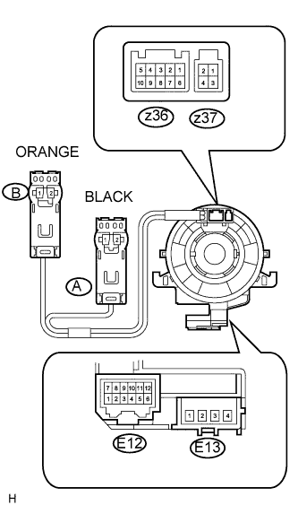

SPIRAL CABLE > INSPECTION |
| 1. INSPECT SPIRAL CABLE |
If there are any defects as mentioned below, replace the spiral cable with a new one:
Scratches, cracks, dents or chips on the connector or the spiral cable.
 |
Check the spiral cable.
Set the spiral cable to the center position (Click here).
Measure the resistance between each terminal of the spiral cable according to the table below.
After setting the spiral cable to the center position, rotate the spiral cable 2.5 times clockwise, and measure the resistance as shown. Then rotate the spiral cable 5 times counterclockwise, and measure the resistance as shown.
| Tester Connection | Condition | Specified Condition |
| E13-1 - B2 | Always | Below 1 Ω |
| E13-2 - B1 | Always | Below 1 Ω |
| E13-3 - A1 | Always | Below 1 Ω |
| E13-4 - A2 | Always | Below 1 Ω |
| E12-6 - z36-10 | Always | Below 1 Ω |
| E12-5 - z36-9 | Always | Below 1 Ω |
| E12-4 - z36-8 | Always | Below 1 Ω |
| E12-3 - z36-7 | Always | Below 1 Ω |
| E12-2 - z36-6 | Always | Below 1 Ω |
| E12-2 - z37-4 | Always | Below 1 Ω |
| E12-1 - z37-3 | Always | Below 1 Ω |
| E12-12 - z36-5 | Always | Below 1 Ω |
| E12-11 - z36-4 | Always | Below 1 Ω |
| E12-10 - z36-3 | Always | Below 1 Ω |
| E12-9 - z36-2 | Always | Below 1 Ω |
| E12-8 - z36-1 | Always | Below 1 Ω |
| E12-8 - z37-2 | Always | Below 1 Ω |
| E12-7 - z37-1 | Always | Below 1 Ω |
After setting the spiral cable to the center position, rotate the spiral cable 2.5 times clockwise. Then while rotating the spiral cable 5 times counterclockwise, measure the resistance as shown.
| Tester Connection | Condition | Specified Condition |
| E13-1 - B2 | Always | Below 1 Ω |
| E13-2 - B1 | Always | Below 1 Ω |
| E13-3 - A1 | Always | Below 1 Ω |
| E13-4 - A2 | Always | Below 1 Ω |
| E12-6 - z36-10 | Always | Below 1 Ω |
| E12-5 - z36-9 | Always | Below 1 Ω |
| E12-4 - z36-8 | Always | Below 1 Ω |
| E12-3 - z36-7 | Always | Below 1 Ω |
| E12-2 - z36-6 | Always | Below 1 Ω |
| E12-2 - z37-4 | Always | Below 1 Ω |
| E12-1 - z37-3 | Always | Below 1 Ω |
| E12-12 - z36-5 | Always | Below 1 Ω |
| E12-11 - z36-4 | Always | Below 1 Ω |
| E12-10 - z36-3 | Always | Below 1 Ω |
| E12-9 - z36-2 | Always | Below 1 Ω |
| E12-8 - z36-1 | Always | Below 1 Ω |
| E12-8 - z37-2 | Always | Below 1 Ω |
| E12-7 - z37-1 | Always | Below 1 Ω |